Directions: Answer questions 1–16 on the answer sheet. Complete questions 17–20 on the back of the answer sheet. Use $g\approx10\,\text{m/s}^2$ when needed. You may write on this assessment copy, but only the answer sheet gets graded.
1. [DOK 1 · Section 2.1] A cup sits in a holder inside a car moving east. Which statement is correct?
A. The cup is moving relative to the car and at rest relative to the road.
B. The object must be either moving or at rest in every possible frame.
C. Reference frames matter only when an object changes speed.
D. Only the object’s own point of view can be used as a reference frame.
E. The cup is at rest relative to the car and moving relative to the road.
2. [DOK 1 · Section 2.2] Which term best describes “12 m/s east”?
A. velocity
B. speed
C. average speed
D. instantaneous speed
E. acceleration
3. [DOK 1 · Section 2.3] Five positions are marked at equal times and the gaps remain equal. How should the motion be classified?
A. speeding up
B. constant speed
C. slowing down
D. not enough information
E. at rest
4. [DOK 1 · Section 2.4] A rock is released and air resistance is ignored. How should its motion be classified?
A. not free fall
B. constant-speed motion
C. free fall
D. zero-acceleration motion
E. motion with no gravitational influence
5. [DOK 1 · Section 2.3] Which term means the rate at which velocity changes?
A. velocity
B. speed
C. average speed
D. acceleration
E. reference frame
6. [DOK 2 · Section 2.2] A runner covers $150\,\text{m}$ in $12\,\text{s}$. Determine the average speed.
A. 12.0 m/s
B. 13.0 m/s
C. 1.25 m/s
D. 18.0 m/s
E. 12.5 m/s
7. [DOK 2 · Section 2.3] A cyclist changes from 8 m/s north to 8 m/s west. Which statement is correct?
A. Speed stays the same, velocity changes, and the cyclist accelerates.
B. Speed changes but velocity remains the same.
C. Neither speed nor velocity changes.
D. Direction changes but no acceleration occurs.
E. Both speed and direction increase.
8. [DOK 2 · Section 2.3] A runner changes velocity from $2\,\text{m/s}$ to $8\,\text{m/s}$ in $3\,\text{s}$. Determine the acceleration.
A. 3 m/s²
B. 2 m/s²
C. -2 m/s²
D. -3 m/s²
E. -4 m/s²
9. [DOK 2 · Section 2.3] The distance-time graph is a straight line from the origin. Which interpretation is supported by its slope?
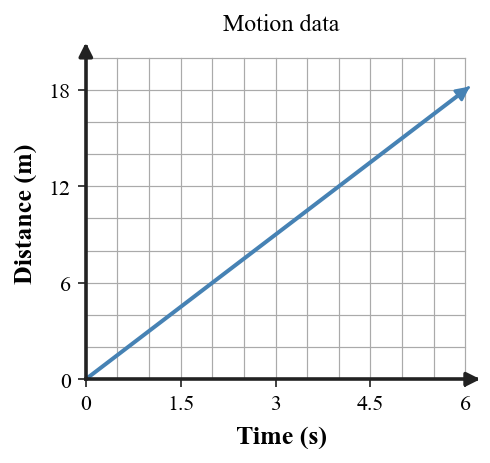
A. The object speeds up because distance increases with time.
B. The object is stopped because the graph is a straight line.
C. The object moves at constant speed because the graph has constant slope.
D. The object slows down because the line rises away from the time axis.
E. The graph proves the object reverses direction halfway through the interval.
10. [DOK 2 · Section 2.4] A ball is dropped from rest. Ignore air resistance and use $g\approx10\,\text{m/s}^2$. What is its speed after $3\,\text{s}$?
A. 15 m/s
B. 20 m/s
C. 45 m/s
D. 30 m/s
E. 90 m/s
11. [DOK 2 · Section 2.5] Four equal-time velocity arrows have the same length and point right. Which motion description matches?
A. speeding up to the right
B. slowing down to the right
C. changing direction at constant speed
D. at rest
E. constant velocity
12. [DOK 3 · Section 2.1] A passenger seated on a moving bus says, “My backpack is at rest.” A person at the bus stop says, “That backpack is moving.” Which evaluation is best?
A. Both can be correct because each statement is relative to a different frame.
B. Only the passenger can be correct because the backpack is beside the passenger.
C. Only the person at the bus stop can be correct because the road is the absolute frame.
D. The backpack is moving relative to the bus at the same speed as the bus.
E. Reference frames matter only when an object is accelerating.
13. [DOK 3 · Section 2.3] A car moves around a circular track at a constant 20 m/s. A student says it is not accelerating because its speed is constant. Which correction is best?
A. The car has zero acceleration because its speedometer is constant.
B. The car accelerates because its velocity direction changes continuously.
C. Acceleration occurs only if the car speeds up.
D. Circular motion has zero velocity because the car returns to its start.
E. Direction is not part of velocity.
14. [DOK 3 · Section 2.5] The velocity-time graph is paired with the table $v=0,2,4,6\,\text{m/s}$ at $t=0,1,2,3\,\text{s}$ and the story “velocity increases by 2 m/s each second.” Which evaluation is best?
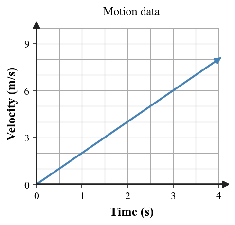
A. All three representations show constant speed and zero acceleration.
B. The acceleration increases by 2 m/s² every second because velocity increases by 2 m/s each second.
C. All three representations are consistent and show constant positive acceleration.
D. The table conflicts with the graph because its velocity values are not constant.
E. The graph must represent position because its line rises.
15. [DOK 3 · Section 2.4] A student says a heavier rock must have a greater free-fall acceleration than a lighter rock. Which response is best?
A. The heavier rock must accelerate faster because its weight is greater.
B. The lighter rock accelerates faster because it has less inertia.
C. Both objects move at constant speed in free fall.
D. Ignoring air resistance, both have approximately the same gravitational acceleration near Earth.
E. Mass determines the value of gravitational acceleration near Earth.
16. [DOK 4 · Section 2.5] A cyclist moves east and brakes while continuing east. Which evaluation of the vector model is strongest?
A. It is wrong because any braking object must reverse direction.
B. It is wrong because acceleration requires increasing speed.
C. It proves the cyclist has zero acceleration.
D. It shows constant velocity because all arrows point east.
E. It is appropriate because the arrows keep the same direction while their lengths decrease.
Free Response — Questions 17–20
Show formulas, substitutions, graph/model evidence, and reasoning on the back of the answer sheet. Clearly identify final answers.
17.[Section 2.2] A runner travels $240\,\text{m}$ in $30\,\text{s}$. Determine the average speed. Show the relationship used and identify one final answer.
18.[Section 2.3] A runner changes velocity from $2\,\text{m/s}$ to $14\,\text{m/s}$ in $4\,\text{s}$. Determine the acceleration.
19.[Section 2.4] A ball is dropped from rest. Ignore air resistance and use $g\approx10\,\text{m/s}^2$. Determine its speed after $4\,\text{s}$.
20.[Section 2.5] Use the velocity-time graph. Write a short motion story that states the initial velocity, describes how velocity changes, and identifies whether the acceleration is constant. Cite one quantitative feature of the graph.
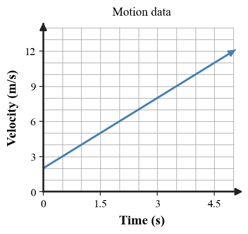
Unit 2 Summative Assessment
Version 2
Name:
Version: 2
Directions: Answer questions 1–16 on the answer sheet. Complete questions 17–20 on the back of the answer sheet. Use $g\approx10\,\text{m/s}^2$ when needed. You may write on this assessment copy, but only the answer sheet gets graded.
1. [DOK 1 · Section 2.1] A backpack rests on a train seat while the train passes a station. Which description is correct?
A. The cup is moving relative to the car and at rest relative to the road.
B. It is at rest relative to the seat and moving relative to the platform.
C. The object must be either moving or at rest in every possible frame.
D. Reference frames matter only when an object changes speed.
E. Only the object’s own point of view can be used as a reference frame.
2. [DOK 1 · Section 2.2] Which term means total distance divided by total travel time?
A. speed
B. velocity
C. average speed
D. instantaneous speed
E. acceleration
3. [DOK 1 · Section 2.3] The object moves to the right and each equal-time gap is larger than the previous gap. How should the motion be classified?
A. constant speed
B. slowing down
C. not enough information
D. speeding up
E. at rest
4. [DOK 1 · Section 2.4] A skydiver descends with an open parachute. How should the motion be classified?
A. free fall
B. constant velocity
C. free fall because it moves downward
D. motion influenced only by gravity
E. not free fall
5. [DOK 1 · Section 2.3] A train remains at 15 m/s east. Which statement is correct?
A. Its velocity is constant and its acceleration is zero.
B. Its speed is constant but its direction changes.
C. Its velocity changes while its acceleration stays zero.
D. Its acceleration is positive because it is moving east.
E. Its acceleration cannot be determined from a constant velocity.
6. [DOK 2 · Section 2.2] Determine the average speed of a cart that travels $216\,\text{m}$ in $18\,\text{s}$.
A. 9 m/s
B. 12 m/s
C. 11 m/s
D. 14 m/s
E. 18 m/s
7. [DOK 2 · Section 2.3] A car changes from 12 m/s east to 20 m/s east. Which statement is correct?
A. Speed changes but velocity remains constant.
B. Only direction changes.
C. Both speed and velocity change, so the car accelerates.
D. The car has zero acceleration.
E. Speed stays constant while velocity changes direction.
8. [DOK 2 · Section 2.3] Determine the acceleration when velocity changes from $5\,\text{m/s}$ to $17\,\text{m/s}$ in $4\,\text{s}$.
A. 2 m/s²
B. -2 m/s²
C. -3 m/s²
D. 3 m/s²
E. -4 m/s²
9. [DOK 2 · Section 2.3] The distance-time graph curves upward as time passes. Which motion description follows from the changing slope?
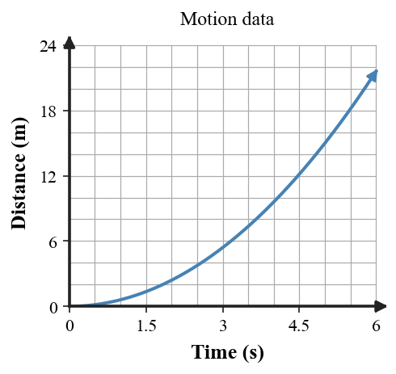
A. The object moves at constant speed because distance always increases.
B. The object slows down because the graph is curved.
C. The object is stopped because the graph begins at the origin.
D. The graph proves the object reverses direction.
E. The object speeds up because the slope becomes steeper with time.
10. [DOK 2 · Section 2.4] A rock is dropped from rest. Ignore air resistance. How far does it fall in $4\,\text{s}$?
A. 80 m
B. 20 m
C. 40 m
D. 60 m
E. 160 m
11. [DOK 2 · Section 2.5] The velocity arrows point right and grow longer from t1 to t4. Which description fits the vector evidence?
A. constant velocity to the right
B. speeding up in the same direction
C. slowing down to the right
D. changing direction at constant speed
E. at rest
12. [DOK 3 · Section 2.1] A suitcase rests on a train floor while the train passes a platform. Which explanation best resolves the claim “the suitcase is both moving and not moving”?
A. The suitcase must be moving in every frame because the train is moving.
B. The suitcase must be at rest in every frame because it does not slide on the floor.
C. It is at rest in the train frame and moving in the platform frame.
D. One of the two claims must be wrong because motion is absolute.
E. The suitcase changes frames only when the train changes speed.
13. [DOK 3 · Section 2.3] Equal-length velocity vectors rotate from east toward north. Which conclusion is best supported?
A. Equal arrow lengths prove constant velocity.
B. Acceleration is zero whenever speed is constant.
C. Only the vector magnitudes matter when comparing velocity.
D. Speed is constant, but changing direction means velocity changes and acceleration occurs.
E. The arrows show changing speed but constant direction.
14. [DOK 3 · Section 2.5] The distance-time graph is paired with a table that increases by 4 m every second and a story describing steady motion. Which evaluation is best?
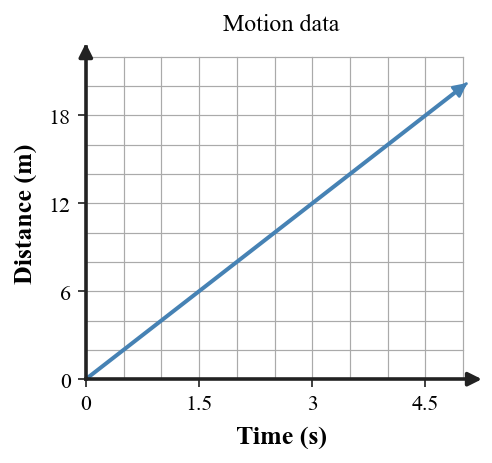
A. The representations show constant positive acceleration because distance increases each second.
B. The object is stopped because each time interval has the same length.
C. The speed is 4 m/s² because distance changes by 4 m each second.
D. The graph shows increasing speed because its line rises.
E. The graph, table, and story are consistent with constant speed.
15. [DOK 3 · Section 2.4] A coin and feather are dropped together in a vacuum. Why can they fall together?
A. Removing air resistance allows both to show approximately the same free-fall acceleration.
B. They have equal mass in a vacuum.
C. A vacuum removes gravity from both objects.
D. The feather becomes heavier when air is removed.
E. Both fall at constant speed because there is no air.
16. [DOK 4 · Section 2.5] A drone turns from east to north while maintaining the same speed. Which evaluation is best?
A. The model is wrong because equal arrow lengths require zero acceleration.
B. The equal-length arrows with changing direction are a strong model because speed stays constant while velocity changes.
C. The model should use longer arrows during the turn even if speed is unchanged.
D. The model should keep every arrow east because speed is constant.
E. A velocity-vector model cannot show a turn.
Free Response — Questions 17–20
Show formulas, substitutions, graph/model evidence, and reasoning on the back of the answer sheet. Clearly identify final answers.
17.[Section 2.2] Determine the average speed of a cart that travels $450\,\text{m}$ in $50\,\text{s}$. Show your substitution.
18.[Section 2.3] Take forward as positive. A cyclist slows from $18\,\text{m/s}$ to $6\,\text{m/s}$ in $4\,\text{s}$. Determine the acceleration.
19.[Section 2.4] A rock is dropped from rest and falls freely for $3\,\text{s}$. Determine the distance fallen.
20.[Section 2.5] Use the distance-time graph. Describe the motion before, during, and after the flat segment. Explain what the flat segment means physically and compare the speeds before and after it from the slopes.
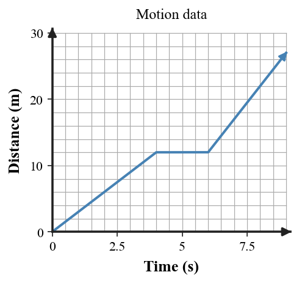
Unit 2 Summative Assessment
Version 3
Name:
Version: 3
Directions: Answer questions 1–16 on the answer sheet. Complete questions 17–20 on the back of the answer sheet. Use $g\approx10\,\text{m/s}^2$ when needed. You may write on this assessment copy, but only the answer sheet gets graded.
1. [DOK 1 · Section 2.1] A drone hovers over the same mark on the deck of a boat moving downstream. Which statement is correct?
A. The cup is moving relative to the car and at rest relative to the road.
B. The object must be either moving or at rest in every possible frame.
C. Reference frames matter only when an object changes speed.
D. The drone is at rest relative to the boat and moving relative to the shore.
E. Only the object’s own point of view can be used as a reference frame.
2. [DOK 1 · Section 2.2] A car’s speedometer reads 72 km/h at one instant. Which term describes that reading?
A. speed
B. velocity
C. average speed
D. acceleration
E. instantaneous speed
3. [DOK 1 · Section 2.3] The arrow shows rightward motion while the equal-time spacing changes across the diagram. How should the motion be classified?
A. slowing down
B. constant speed
C. speeding up
D. not enough information
E. at rest
4. [DOK 1 · Section 2.4] A ball is moving upward after leaving a hand. Ignore air resistance. Is it in free fall?
A. no; upward motion prevents free fall
B. yes; gravity is the only significant influence
C. no; zero speed at the top means zero acceleration
D. yes; because gravity has stopped acting
E. no; free fall requires downward velocity
5. [DOK 1 · Section 2.3] A car moves around a circular track at constant speed. Which quantity must change?
A. speed
B. mass
C. velocity
D. elapsed time
E. distance traveled
6. [DOK 2 · Section 2.2] A cyclist travels $600\,\text{m}$ in $120\,\text{s}$. What is the average speed?
A. 0.20 m/s
B. 4.0 m/s
C. 6.0 m/s
D. 5 m/s
E. 7.2 m/s
7. [DOK 2 · Section 2.3] A train remains at 15 m/s east. Which statement is correct?
A. The train accelerates east because it is moving.
B. The train has positive acceleration because velocity is positive.
C. Its speed is constant but direction changes.
D. Its acceleration must equal 15 m/s².
E. Neither speed nor direction changes, so acceleration is zero.
8. [DOK 2 · Section 2.3] Take the direction of motion as positive. A cart slows from $12\,\text{m/s}$ to $4\,\text{m/s}$ in $4\,\text{s}$. What is the acceleration?
A. -2 m/s²
B. 2 m/s²
C. 3 m/s²
D. -3 m/s²
E. -4 m/s²
9. [DOK 2 · Section 2.3] Use the velocity-time graph. What does the straight rising line show?
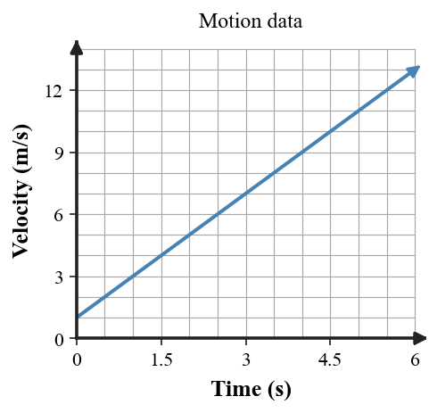
A. constant positive velocity and zero acceleration
B. constant positive acceleration
C. acceleration that increases every second
D. zero velocity because the line begins at the origin
E. constant negative acceleration
10. [DOK 2 · Section 2.4] A dropped object starts from rest. What is its speed after $5\,\text{s}$ if $g\approx10\,\text{m/s}^2$?
A. 25 m/s
B. 40 m/s
C. 50 m/s
D. 60 m/s
E. 250 m/s
11. [DOK 2 · Section 2.5] The vector lengths stay equal while their directions rotate. What motion pattern does this represent?
A. constant velocity
B. speeding up in one fixed direction
C. slowing down in one fixed direction
D. constant speed with changing direction
E. at rest
12. [DOK 3 · Section 2.1] A drone hovers over one point on a boat deck as the boat moves downstream. A passenger says the drone is at rest; a shore observer says it moves downstream. Which is best?
A. Only the shore observer is correct because land is the only valid reference frame.
B. Only the passenger is correct because the drone stays above one deck point.
C. The drone has zero velocity relative to every observer because it is hovering.
D. The two observers must measure the same velocity because they watch the same drone.
E. Both descriptions are valid when their reference frames are stated.
13. [DOK 3 · Section 2.3] A runner completes a quarter-turn on a track while keeping the same speed. Why can the runner still have acceleration?
A. The direction of the velocity vector changes during the turn.
B. The runner must speed up during the turn.
C. The velocity is unchanged because the speed is unchanged.
D. Acceleration occurs only after the turn is complete.
E. The turn changes position but not velocity.
14. [DOK 3 · Section 2.5] A student pairs the distance-time graph with the story “the cart moves at constant speed.” Which evaluation is best?
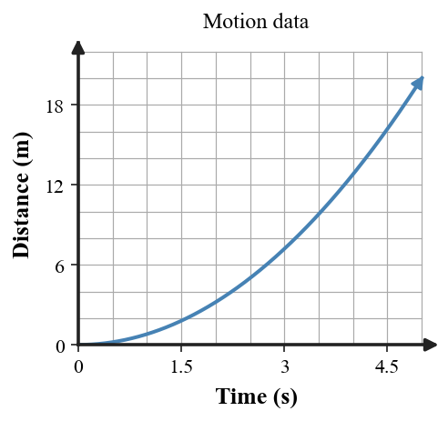
A. The story is consistent because the object keeps gaining distance.
B. The story is inconsistent because the graph slope increases with time.
C. The graph shows the cart slowing because it is curved.
D. Speed cannot be inferred from the slope of a distance-time graph.
E. The changing slope shows zero acceleration.
15. [DOK 3 · Section 2.4] Two objects of different mass are in ideal free fall. Which prediction is best?
A. The heavier object gains more speed each second.
B. Both objects keep the same speed after release.
C. Each gains about 10 m/s of speed each second near Earth.
D. The lighter object accelerates only until the heavier one catches it.
E. Their accelerations are zero because they start together.
16. [DOK 4 · Section 2.5] A ball is dropped from rest and air resistance is ignored. Evaluate the graph as a model of the magnitude of its downward velocity.
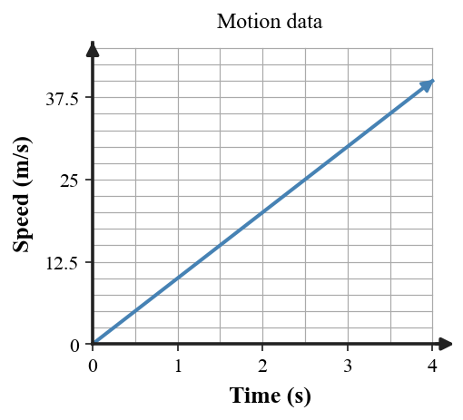
A. It is wrong because free-fall speed should remain constant.
B. It is wrong because distance, not velocity, changes in free fall.
C. It proves the object moves upward because velocity values are positive.
D. It is reasonable because the magnitude increases by about 10 m/s each second, but the graph does not show downward direction.
E. It is complete because speed magnitude contains all velocity information.
Free Response — Questions 17–20
Show formulas, substitutions, graph/model evidence, and reasoning on the back of the answer sheet. Clearly identify final answers.
17.[Section 2.2] A cyclist travels $600\,\text{m}$ in $120\,\text{s}$. Determine the average speed and state what the value means in words.
18.[Section 2.3] A cart starts from rest and reaches $20\,\text{m/s}$ in $5\,\text{s}$. Determine the acceleration.
19.[Section 2.4] A dropped object falls freely for $5\,\text{s}$. Determine its final speed, use that to find the average velocity over the interval, and report one final distance.
20.[Section 2.5] The velocity vectors have equal lengths but change direction. Explain why the object can have constant speed and still be accelerating. Use both speed and velocity correctly.
Unit 2 Summative Assessment
Version 4
Name:
Version: 4
Directions: Answer questions 1–16 on the answer sheet. Complete questions 17–20 on the back of the answer sheet. Use $g\approx10\,\text{m/s}^2$ when needed. You may write on this assessment copy, but only the answer sheet gets graded.
1. [DOK 1 · Section 2.1] A runner stands still on a moving flatbed cart. How can both “the runner is at rest” and “the runner is moving” be true?
A. The statements use different reference frames.
B. The cup is moving relative to the car and at rest relative to the road.
C. The object must be either moving or at rest in every possible frame.
D. Reference frames matter only when an object changes speed.
E. Only the object’s own point of view can be used as a reference frame.
2. [DOK 1 · Section 2.2] A runner is reported to move at 6 m/s, with no direction given. Which quantity is fully specified?
A. velocity
B. speed
C. average speed
D. instantaneous speed
E. acceleration
3. [DOK 1 · Section 2.3] The dots are equal-time positions, but the diagram does not show which end is first. How should the motion be classified?
A. constant speed
B. speeding up
C. not enough information
D. slowing down
E. at rest
4. [DOK 1 · Section 2.4] A coin falls inside a vacuum tube. Which description is best?
A. not free fall
B. constant-speed motion
C. motion with zero gravity
D. free fall
E. motion supported by the tube
5. [DOK 1 · Section 2.3] A cart stays at 10 m/s east for the entire interval. What is its acceleration?
A. 10 m/s²
B. positive but unknown
C. negative but unknown
D. not enough information
E. zero
6. [DOK 2 · Section 2.2] A toy car travels $24\,\text{m}$ in $9\,\text{s}$. What is its average speed to the nearest hundredth?
A. 2.67 m/s
B. 0.38 m/s
C. 2.50 m/s
D. 3.00 m/s
E. 3.67 m/s
7. [DOK 2 · Section 2.3] A car follows a curve at a steady 14 m/s. Why is it accelerating?
A. Its speed increases while direction stays fixed.
B. Its direction changes, so its velocity changes.
C. No acceleration occurs because speed is constant.
D. Both speed and direction must change.
E. Velocity remains constant because the speedometer is steady.
8. [DOK 2 · Section 2.3] Take east as positive. A cart changes from $-3\,\text{m/s}$ to $+9\,\text{m/s}$ in $6\,\text{s}$. Determine the acceleration.
A. 3 m/s²
B. -2 m/s²
C. 2 m/s²
D. -3 m/s²
E. -4 m/s²
9. [DOK 2 · Section 2.3] Use the velocity-time graph. Which description is best?
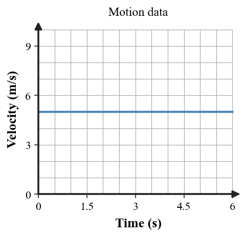
A. the object is stopped because the graph is horizontal
B. constant positive acceleration equal to the plotted velocity value
C. speed that increases steadily with time
D. constant positive velocity and zero acceleration
E. distance that remains constant
10. [DOK 2 · Section 2.4] A ball is released from rest and falls freely for $2\,\text{s}$. How far does it fall?
A. 10 m
B. 15 m
C. 40 m
D. 100 m
E. 20 m
11. [DOK 2 · Section 2.5] Successive velocity arrows point right but become shorter. Which description best matches the sequence?
A. slowing down in the same direction
B. constant velocity to the right
C. speeding up to the right
D. changing direction at constant speed
E. at rest
12. [DOK 3 · Section 2.1] Two people on different moving walkways report different velocities for the same traveler. Which reasoning is strongest?
A. Every observer must measure the same velocity for the same traveler.
B. Velocity descriptions can differ because each observer uses a different reference frame.
C. Different reference frames can change direction labels but never measured speed.
D. The traveler has no velocity until both observers agree on a value.
E. The difference must be caused by different traveler masses on the two walkways.
13. [DOK 3 · Section 2.3] A satellite moves at nearly constant speed along a curved path. Which explanation best addresses whether it accelerates?
A. No. Constant speed always means zero acceleration.
B. No. Curved paths change position but never velocity.
C. Yes. Curved motion changes velocity direction even when speed is nearly constant.
D. Yes, but only because the satellite has mass.
E. The acceleration is zero unless the speed increases.
14. [DOK 3 · Section 2.5] The velocity-time graph is paired with a table showing 5 m/s at every second. Which evaluation is best?
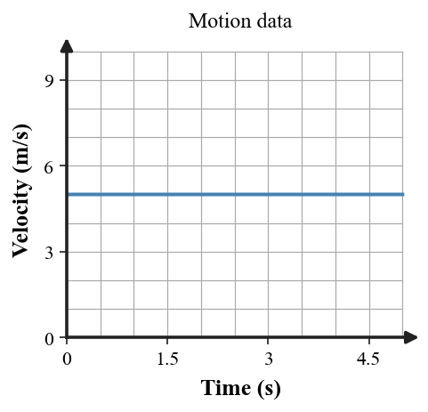
A. The graph shows an acceleration of 5 m/s² because the line is at 5.
B. The object is stopped because the velocity-time line is horizontal.
C. The velocity increases steadily because time increases.
D. The graph and table agree with constant velocity and zero acceleration.
E. The graph shows constant position because the plotted value does not change.
15. [DOK 3 · Section 2.4] A flat sheet of paper and the same sheet crumpled tightly fall differently in air. What is the strongest explanation?
A. The crumpled paper has more mass after being crumpled.
B. Gravity is stronger on compact shapes.
C. The flat paper has a smaller gravitational acceleration.
D. Crumpling removes gravity from the paper.
E. Their shapes produce different air resistance, so the situation is not ideal free fall.
16. [DOK 4 · Section 2.5] A delivery robot travels straight at constant speed, then turns without changing speed. Which evidence set best supports the motion?
A. Constant-length velocity vectors that change direction at the turn, together with a horizontal speed-time graph.
B. Longer and longer vectors together with a rising speed-time graph.
C. Constant-direction vectors together with a speed-time graph dropping to zero.
D. Shortening vectors with a horizontal speed-time graph.
E. A single speed value with no direction information.
Free Response — Questions 17–20
Show formulas, substitutions, graph/model evidence, and reasoning on the back of the answer sheet. Clearly identify final answers.
17.[Section 2.2] A robot travels $1200\,\text{m}$ in $150\,\text{s}$. Determine its average speed.
18.[Section 2.3] Take east as positive. A cart changes from $-4\,\text{m/s}$ to $+8\,\text{m/s}$ in $3\,\text{s}$. Determine the acceleration.
19.[Section 2.4] A freely falling object has fallen $20\,\text{m}$ by 2 s and $45\,\text{m}$ by 3 s. How far does it fall during the third second?
20.[Section 2.5] A student says this graph represents a cart that starts from rest and speeds up steadily. Critique the claim. State what the graph actually shows and describe how the graph should change to represent speeding up.
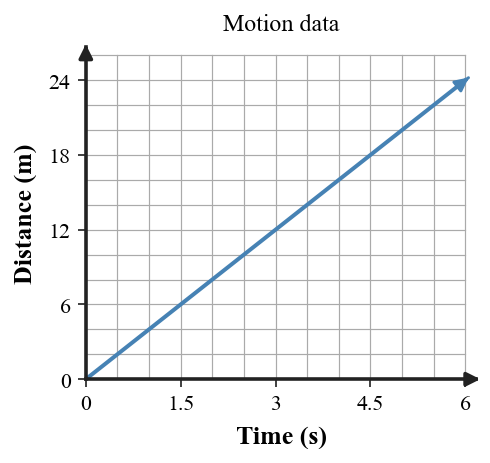
Unit 2 Summative Assessment
Version 5
Name:
Version: 5
Directions: Answer questions 1–16 on the answer sheet. Complete questions 17–20 on the back of the answer sheet. Use $g\approx10\,\text{m/s}^2$ when needed. You may write on this assessment copy, but only the answer sheet gets graded.
1. [DOK 1 · Section 2.1] Which reference frame makes the statement “the textbook is at rest” most useful during class?
A. The cup is moving relative to the car and at rest relative to the road.
B. The object must be either moving or at rest in every possible frame.
C. the desktop
D. Reference frames matter only when an object changes speed.
E. Only the object’s own point of view can be used as a reference frame.
2. [DOK 1 · Section 2.2] Which quantity includes both how fast an object moves and its direction?
A. speed
B. average speed
C. instantaneous speed
D. velocity
E. acceleration
3. [DOK 1 · Section 2.3] Equal-time positions are shown; the arrow gives the direction. How should the motion be classified?
A. speeding up
B. slowing down
C. not enough information
D. at rest
E. constant speed
4. [DOK 1 · Section 2.4] A powered drone descends while its propellers are operating. Which description is best?
A. not free fall
B. free fall
C. constant velocity
D. free fall because it is descending
E. motion under gravity alone
5. [DOK 1 · Section 2.3] An object keeps the same speed but turns left. What changes?
A. its speed only
B. its velocity because direction changes
C. neither speed nor velocity
D. its mass
E. the elapsed time
6. [DOK 2 · Section 2.2] Susie bikes at the same average speed on two trips. Yesterday she traveled 8 miles to school in 30 minutes. At that same speed, how long will an 11-mile trip take?
A. 22.5 min
B. 33 min
C. 41.25 min
D. 45 min
E. 52.5 min
7. [DOK 2 · Section 2.3] The three arrows point east and get longer at equal time intervals. What does the model show?
A. Only direction changes.
B. The object has constant velocity.
C. The object is slowing down.
D. Speed and velocity magnitude increase, so the object accelerates.
E. Acceleration is zero because every arrow points east.
8. [DOK 2 · Section 2.3] A cyclist increases from $4\,\text{m/s}$ to $16\,\text{m/s}$ in $6\,\text{s}$. What is the acceleration?
A. 3 m/s²
B. -2 m/s²
C. -3 m/s²
D. -4 m/s²
E. 2 m/s²
9. [DOK 2 · Section 2.3] Use the distance-time graph. What happens during the flat middle segment?
A. The object is stopped because distance does not change.
B. The object continues moving at a small constant speed.
C. The object moves backward during the flat segment.
D. The object speeds up during the flat segment.
E. The distance decreases during the flat segment.
10. [DOK 2 · Section 2.4] A dropped object falls freely for $3\,\text{s}$. Use its final speed to find its average velocity over the interval, then determine the distance fallen. What is the final distance?
A. 15 m
B. 45 m
C. 30 m
D. 60 m
E. 90 m
11. [DOK 2 · Section 2.5] The first two arrows point north and the next two point east, all with equal length. Which description is supported?
A. constant velocity north
B. speeding up while turning east
C. a direction change with speed unchanged
D. slowing to rest before the turn
E. zero velocity throughout
12. [DOK 3 · Section 2.1] A runner stands on a cart moving east. The runner walks east at 2 m/s relative to the cart. Why can a ground observer report a different speed?
A. The ground observer must also measure exactly 2 m/s because that is the runner's speed.
B. The cart's motion is irrelevant once the runner begins walking.
C. Changing reference frames changes only units, not measured velocity.
D. The ground and cart are different reference frames, so relative motion changes the measured velocity.
E. The runner's mass must be known before the two measured speeds can differ.
13. [DOK 3 · Section 2.3] A student looks only at vector lengths and concludes there is no acceleration. The arrows are equal length but point in different directions. What is missing from the reasoning?
A. Vector length alone is enough to establish constant velocity.
B. Direction does not affect velocity.
C. Equal speeds guarantee zero acceleration.
D. Mass must be known before velocity can be compared.
E. Velocity includes direction as well as magnitude.
14. [DOK 3 · Section 2.5] The velocity-time graph is paired with values 10, 8, 6, 4 m/s at equal times. Which interpretation is best?
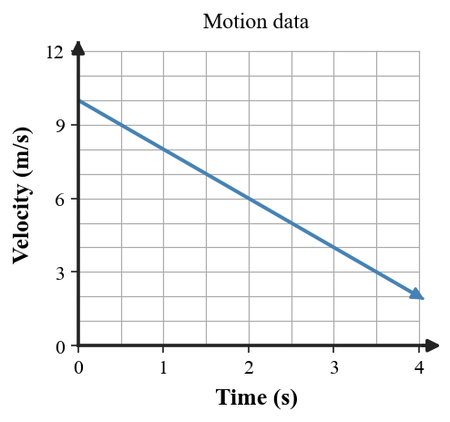
A. The object slows at a constant rate; graph and table are consistent.
B. The object speeds up because every velocity value is positive.
C. The acceleration is zero because the graph is a straight line.
D. The speed is constant because the object never reaches zero velocity.
E. The object moves backward because the velocity-time graph slopes downward.
15. [DOK 3 · Section 2.4] A student says, “Gravity gives every object the same force, so they have the same acceleration.” Which revision is best?
A. Every object experiences exactly the same gravitational force.
B. The free-fall acceleration is approximately the same when air resistance is ignored, even though gravitational force can depend on mass.
C. Heavier objects have a larger value of g near Earth.
D. Equal acceleration occurs only for equal masses.
E. Air resistance is required to make the accelerations equal.
16. [DOK 4 · Section 2.5] A car follows a curved road at constant speed. Which argument best defends this model over one with parallel equal-length arrows?
A. Parallel equal-length arrows are better because constant speed means constant velocity.
B. The arrows should grow longer because turning always increases speed.
C. The changing arrow direction captures the changing velocity that occurs on the curve while equal lengths preserve speed.
D. Direction is irrelevant in a velocity model.
E. A vector model cannot distinguish straight and curved motion.
Free Response — Questions 17–20
Show formulas, substitutions, graph/model evidence, and reasoning on the back of the answer sheet. Clearly identify final answers.
17.[Section 2.2] Susie bikes at the same speed each day. It took 30 minutes to travel 8 miles to school. How long will it take to travel 11 miles to a friend’s house at the same speed? Show the intermediate speed, but report one final time.
18.[Section 2.3] Take east as positive. A vehicle changes from $+10\,\text{m/s}$ east to $-5\,\text{m/s}$ west in $3\,\text{s}$. Determine the average acceleration and interpret the sign.
19.[Section 2.4] A freely falling object starts from rest. Compare the distance fallen after 4 s with the distance after 2 s. How many times as far has it fallen?
20.[Section 2.5] A car travels east at 12 m/s and then turns north while maintaining 12 m/s. The graph shows only speed. Explain why the graph alone cannot prove constant velocity, and name one representation that would supply the missing evidence.
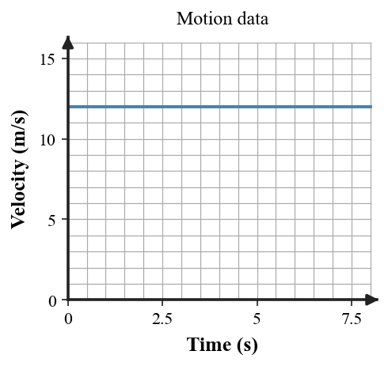
Unit 2 Summative Assessment
Version 6
Name:
Version: 6
Directions: Answer questions 1–16 on the answer sheet. Complete questions 17–20 on the back of the answer sheet. Use $g\approx10\,\text{m/s}^2$ when needed. You may write on this assessment copy, but only the answer sheet gets graded.
1. [DOK 1 · Section 2.1] Two observers disagree about whether a suitcase on a moving train is moving. What information is needed first to evaluate their claims?
A. The cup is moving relative to the car and at rest relative to the road.
B. The object must be either moving or at rest in every possible frame.
C. Reference frames matter only when an object changes speed.
D. Only the object’s own point of view can be used as a reference frame.
E. the reference frame used by each observer
2. [DOK 1 · Section 2.2] A boat is reported to move at 55 km/h north. Which term best describes the report?
A. velocity
B. speed
C. average speed
D. instantaneous speed
E. acceleration
3. [DOK 1 · Section 2.3] A rightward motion diagram records one position every equal time interval. How should the motion be classified?
A. constant speed
B. speeding up
C. slowing down
D. not enough information
E. at rest
4. [DOK 1 · Section 2.4] A coffee filter falls slowly through air with substantial drag. Which description is best?
A. free fall
B. constant velocity
C. not free fall
D. free fall because the filter is light
E. motion with negligible drag
5. [DOK 1 · Section 2.3] Which situation can involve acceleration?
A. moving straight at constant velocity
B. remaining at rest
C. moving east at constant velocity
D. slowing down while moving straight
E. keeping both speed and direction unchanged
6. [DOK 2 · Section 2.2] A cart covers $48\,\text{m}$ in $12\,\text{s}$. If it maintains that average speed for $18\,\text{s}$ on the next trial, how far will it travel?
A. 36 m
B. 54 m
C. 66 m
D. 864 m
E. 72 m
7. [DOK 2 · Section 2.3] Equal-length velocity arrows rotate from east toward north. What does the model show?
A. Speed stays constant but velocity changes direction, so there is acceleration.
B. The object has constant velocity because arrow lengths match.
C. Speed increases while direction stays fixed.
D. Speed decreases while direction changes.
E. No acceleration occurs because speed is constant.
8. [DOK 2 · Section 2.3] A train slows from $20\,\text{m/s}$ to $5\,\text{m/s}$ in $5\,\text{s}$. Take forward as positive. What is the acceleration?
A. 2 m/s²
B. -3 m/s²
C. 3 m/s²
D. -2 m/s²
E. -4 m/s²
9. [DOK 2 · Section 2.3] Use the velocity-time graph. What happens when the graph crosses zero?
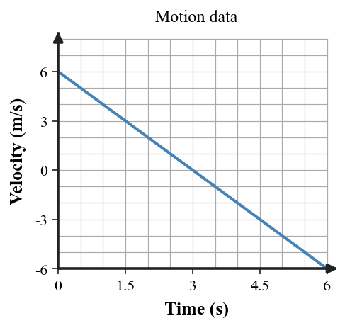
A. The object reaches the origin in position and keeps moving the same direction.
B. The object stops permanently when velocity reaches zero.
C. The object momentarily has zero velocity and then reverses direction.
D. The object has zero speed for the entire interval.
E. The acceleration becomes zero exactly when velocity crosses zero.
10. [DOK 2 · Section 2.4] A dropped object falls freely for $4\,\text{s}$. Determine the distance using the constant-acceleration average-velocity relationship.
A. 20 m
B. 40 m
C. 120 m
D. 80 m
E. 160 m
11. [DOK 2 · Section 2.5] All four equal-time velocity vectors have the same length and point left. How should the motion be described?
A. speeding up to the left
B. slowing down to the left
C. changing direction at constant speed
D. at rest
E. constant velocity to the left
12. [DOK 3 · Section 2.1] A cup is motionless in a car’s cupholder while the car moves east. Which pair of statements is most defensible?
A. At rest relative to the car; moving east relative to the road.
B. Moving east relative to the car; at rest relative to the road.
C. Moving east relative to both the car and the road.
D. At rest relative to both the car and the road.
E. There is not enough information to describe the cup in either frame.
13. [DOK 3 · Section 2.3] Student A says “constant speed means zero acceleration.” Student B says “constant speed can still include acceleration on a curved path.” Which evaluation is best?
A. Student A is correct because acceleration requires a speed change.
B. Student B is correct because changing direction changes velocity.
C. Both students are correct for every kind of motion.
D. Neither student is correct because speed and velocity are identical.
E. There is not enough information because mass is not given.
14. [DOK 3 · Section 2.5] A story says “the robot keeps moving, only more slowly,” but the distance-time graph contains a flat middle segment. Which evaluation is best?
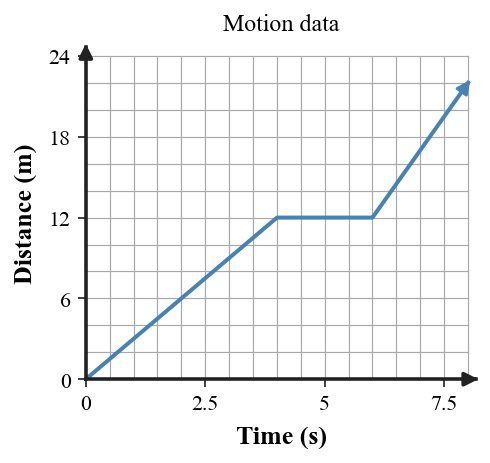
A. The robot is merely moving more slowly during the flat segment.
B. The flat segment means the robot is moving backward.
C. The story conflicts with the graph because a flat distance segment means the robot is stopped.
D. The robot has constant nonzero velocity throughout the graph.
E. A flat distance-time segment means the robot has constant acceleration.
15. [DOK 3 · Section 2.4] A bowling ball and tennis ball are released together in a vacuum. Which prediction is best?
A. The bowling ball lands first because it is heavier.
B. The tennis ball lands first because it has less inertia.
C. Neither accelerates because a vacuum contains no gravity.
D. They have approximately the same free-fall acceleration and land together if released from the same height.
E. Both move with constant speed from the instant of release.
16. [DOK 4 · Section 2.5] A cart moves right, slows to rest, then reverses left. Which evaluation of the graph is best?
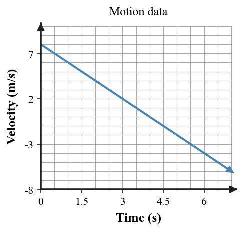
A. The graph is wrong because velocity cannot be negative.
B. Crossing zero means the cart stops permanently.
C. Negative velocity means the cart is moving faster, not in a different direction.
D. The graph shows constant velocity because it is a straight line.
E. The graph is reasonable: positive velocity represents rightward motion, zero marks the turnaround instant, and negative velocity represents leftward motion.
Free Response — Questions 17–20
Show formulas, substitutions, graph/model evidence, and reasoning on the back of the answer sheet. Clearly identify final answers.
17.[Section 2.2] A cart covers $48\,\text{m}$ in $12\,\text{s}$. It then travels at the same speed for $25\,\text{s}$. How far does it travel during the 25-second interval? Show the intermediate speed, but report one final distance.
18.[Section 2.3] Take north as positive. A drone changes from $+12\,\text{m/s}$ north to $-12\,\text{m/s}$ south in $6\,\text{s}$. Determine the average acceleration.
19.[Section 2.4] A dropped object reaches a speed of $50\,\text{m/s}$ in ideal free fall. Using $g\approx10\,\text{m/s}^2$, determine the fall time.
20.[Section 2.5] Use the signed velocity-time graph to describe the object’s motion before, at, and after the zero crossing. Explain what the sign of velocity tells you.
Unit 2 Summative Assessment
Version 7
Name:
Version: 7
Directions: Answer questions 1–16 on the answer sheet. Complete questions 17–20 on the back of the answer sheet. Use $g\approx10\,\text{m/s}^2$ when needed. You may write on this assessment copy, but only the answer sheet gets graded.
1. [DOK 1 · Section 2.1] A traveler walks forward on a moving airport walkway. Which phrase makes the statement “the traveler is moving” physically precise?
A. The cup is moving relative to the car and at rest relative to the road.
B. relative to a stated reference frame
C. The object must be either moving or at rest in every possible frame.
D. Reference frames matter only when an object changes speed.
E. Only the object’s own point of view can be used as a reference frame.
2. [DOK 1 · Section 2.2] Which term describes an object’s speed at one particular moment?
A. speed
B. velocity
C. instantaneous speed
D. average speed
E. acceleration
3. [DOK 1 · Section 2.3] The start and direction are marked on this equal-time motion diagram. How should the motion be classified?
A. constant speed
B. speeding up
C. not enough information
D. slowing down
E. at rest
4. [DOK 1 · Section 2.4] A rock is dropped in a vacuum chamber. Which description is best?
A. not free fall
B. constant-speed motion
C. motion with no gravitational acceleration
D. motion supported by the chamber
E. free fall
5. [DOK 1 · Section 2.3] A cyclist keeps the same speed but changes from north to west. Which statement is correct?
A. The velocity changes even though the speed does not.
B. The speed changes while velocity stays the same.
C. Both speed and velocity stay unchanged.
D. Direction does not affect velocity.
E. Acceleration must be zero because speed is constant.
6. [DOK 2 · Section 2.2] A robot travels $100\,\text{m}$ in $50\,\text{s}$ and then $150\,\text{m}$ in $75\,\text{s}$. What is its average speed for the entire trip?
A. 1.5 m/s
B. 2.0 m/s
C. 2.5 m/s
D. 4.0 m/s
E. 5.0 m/s
7. [DOK 2 · Section 2.3] A skateboarder moves 6 m/s east, turns around, and moves 6 m/s west. Which statement is best?
A. Velocity is unchanged because the speed is 6 m/s both times.
B. There is no acceleration during the turn.
C. The speed can be the same before and after, but velocity changes during the turn.
D. The speed must double during the turn.
E. Direction can reverse without changing velocity.
8. [DOK 2 · Section 2.3] Take east as positive. A skater changes from $+6\,\text{m/s}$ east to $-6\,\text{m/s}$ west in $3\,\text{s}$. What is the average acceleration?
A. 2 m/s²
B. 3 m/s²
C. -2 m/s²
D. -4 m/s²
E. -3 m/s²
9. [DOK 2 · Section 2.3] Use the distance-time graph. What does the decreasing slope indicate?
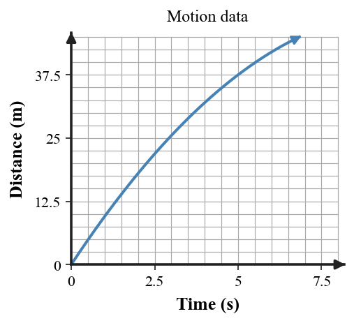
A. The object is speeding up because distance keeps increasing.
B. The object moves at constant speed because the graph never becomes flat.
C. The object reverses direction because the slope gets smaller.
D. The object is stopped for the entire interval.
E. The object is slowing down.
10. [DOK 2 · Section 2.4] A dropped object falls $20\,\text{m}$ during its first $2\,\text{s}$ and $45\,\text{m}$ total by $3\,\text{s}$. How far does it fall during the third second?
A. 25 m
B. 15 m
C. 20 m
D. 45 m
E. 65 m
11. [DOK 2 · Section 2.5] Each velocity arrow points right, and each is longer than the one before it. Which description is supported?
A. constant velocity to the right
B. increasing speed to the right
C. slowing down to the right
D. changing direction with equal speed
E. at rest
12. [DOK 3 · Section 2.1] One student says Earth’s surface is a poor reference frame because Earth rotates and orbits. Another says it is still useful for everyday classroom motion. Which evaluation is strongest?
A. Earth's surface is an absolute reference frame because Earth does not move.
B. Gravity requires every motion problem to use Earth's center as its frame.
C. It is convenient and approximately fixed relative to most everyday locations.
D. Using Earth's surface makes all measured velocities equal for all observers.
E. It is the only reference frame allowed for objects near Earth.
13. [DOK 3 · Section 2.3] A cyclist rides straight at constant speed, makes a turn at the same speed, then rides straight again. When is acceleration most clearly present?
A. during the first straight leg
B. during the second straight leg
C. equally throughout all three parts
D. during the turn
E. never, because speed is constant
14. [DOK 3 · Section 2.5] The graph rises linearly while velocity increases by 2 m/s each second. A student claims the acceleration itself increases every second. Which evaluation is best?
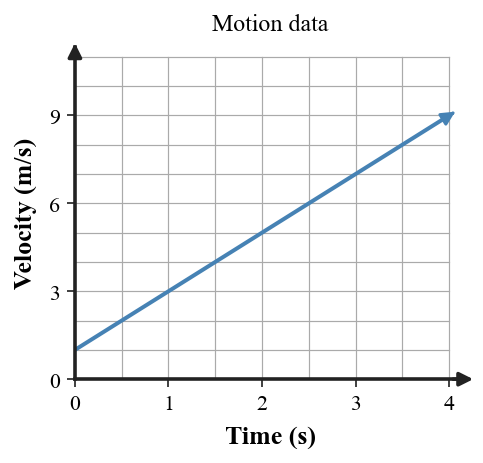
A. The student is correct because increasing velocity means increasing acceleration.
B. The acceleration is zero because the graph is a straight line.
C. The acceleration is 2 m/s each second squared only at the final point.
D. The graph shows constant velocity because equal time steps are used.
E. The claim is incorrect; a straight velocity-time line has constant slope and constant acceleration.
15. [DOK 3 · Section 2.4] A leaf falls slower than a pebble in air. Why does this not prove that the pebble has a larger gravitational acceleration?
A. Air resistance is a confounding influence and differs greatly between the objects.
B. The pebble has more gravitational acceleration solely because it has more mass.
C. The leaf experiences no gravity.
D. The objects must have started from different heights.
E. The slower leaf proves free-fall acceleration depends on shape.
16. [DOK 4 · Section 2.5] A car travels north at 12 m/s and then east at 12 m/s. Which evidence-supported conclusion is best?
A. The velocity is constant because the speed is 12 m/s throughout.
B. A horizontal speed-time graph alone would miss the direction change; the vector model shows that velocity changes at the turn.
C. The car does not accelerate because the vector lengths are equal.
D. The turn can be represented only by a distance-time graph.
E. Speed-time graphs always show direction changes.
Free Response — Questions 17–20
Show formulas, substitutions, graph/model evidence, and reasoning on the back of the answer sheet. Clearly identify final answers.
17.[Section 2.2] A robot travels $300\,\text{m}$ in $120\,\text{s}$ and then $200\,\text{m}$ in $80\,\text{s}$. Determine the average speed for the entire trip.
18.[Section 2.3] A car accelerates at $2\,\text{m/s}^2$ while its velocity changes from $4\,\text{m/s}$ to $16\,\text{m/s}$. Determine the time required.
19.[Section 2.4] A ball is released from rest and falls freely for $4\,\text{s}$. Determine the distance fallen.
20.[Section 2.5] The dots are recorded at equal time intervals and the arrow shows motion to the right. Describe the speed trend, state the direction of acceleration relative to the motion, and explain what evidence from the diagram supports your conclusion.
Unit 2 Summative Assessment
Version 8
Name:
Version: 8
Directions: Answer questions 1–16 on the answer sheet. Complete questions 17–20 on the back of the answer sheet. Use $g\approx10\,\text{m/s}^2$ when needed. You may write on this assessment copy, but only the answer sheet gets graded.
1. [DOK 1 · Section 2.1] A book sits on a desk while Earth orbits the Sun. Which statement is correct?
A. The cup is moving relative to the car and at rest relative to the road.
B. The object must be either moving or at rest in every possible frame.
C. Reference frames matter only when an object changes speed.
D. The book can be at rest relative to the desk while moving relative to the Sun.
E. Only the object’s own point of view can be used as a reference frame.
2. [DOK 1 · Section 2.2] A student writes only “7 m/s.” Which motion quantity is given?
A. velocity
B. average speed
C. instantaneous speed
D. acceleration
E. speed
3. [DOK 1 · Section 2.3] Equal-time positions are shown, but the time order is not labeled. How should the motion be classified?
A. not enough information
B. constant speed
C. speeding up
D. slowing down
E. at rest
4. [DOK 1 · Section 2.4] A rocket is descending while its engine is firing. Which description is best?
A. free fall
B. not free fall
C. constant velocity
D. free fall because it is descending
E. motion influenced only by gravity
5. [DOK 1 · Section 2.3] A report states only “20 m/s.” What information is still missing for a complete velocity?
A. mass
B. elapsed time
C. direction
D. distance
E. acceleration magnitude
6. [DOK 2 · Section 2.2] A delivery robot travels $36\,\text{m}$ in $24\,\text{s}$ and then $54\,\text{m}$ in $36\,\text{s}$. Determine the average speed for the combined trip.
A. 1.0 m/s
B. 2.0 m/s
C. 2.5 m/s
D. 1.5 m/s
E. 3.75 m/s
7. [DOK 2 · Section 2.3] A cart has the same velocity vector at every equal time interval. Which conclusion is best?
A. Its acceleration is positive.
B. Its acceleration is negative.
C. It accelerates because it is moving.
D. Direction must be changing between snapshots.
E. Its acceleration is zero during the interval.
8. [DOK 2 · Section 2.3] A cart changes from $-4\,\text{m/s}$ to $+8\,\text{m/s}$ in $4\,\text{s}$. Determine the acceleration.
A. 3 m/s²
B. 2 m/s²
C. -2 m/s²
D. -3 m/s²
E. -4 m/s²
9. [DOK 2 · Section 2.3] Use the velocity-time graph. What happens as the line reaches zero?
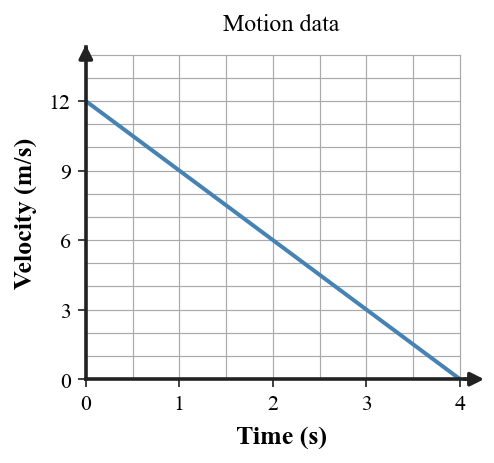
A. The object speeds up in the positive direction until it reaches zero velocity.
B. The object slows to rest while remaining in the positive direction before that instant.
C. The object reverses direction before the graph reaches zero.
D. The object has constant positive velocity because the graph is a straight line.
E. The object is at rest for the entire interval.
10. [DOK 2 · Section 2.4] A freely falling object starts from rest. It falls $20\,\text{m}$ in $2\,\text{s}$ and $80\,\text{m}$ in $4\,\text{s}$. How many times as far has it fallen at 4 s as at 2 s?
A. 2 times
B. 3 times
C. 4 times
D. 8 times
E. 16 times
11. [DOK 2 · Section 2.5] All four velocity arrows have equal length, but their directions change around the compass. Which conclusion fits the model?
A. constant velocity because the arrow lengths match
B. speeding up because direction changes
C. slowing down because direction changes
D. changing velocity even though all arrow lengths match
E. at rest because the average direction cancels
12. [DOK 3 · Section 2.1] A student claims, “If an object is at rest, it is not moving anywhere.” Which response is best?
A. If speed is zero in one frame, it must be zero in every frame.
B. Rest is an absolute condition, while only direction depends on the frame.
C. Reference frames matter for velocity but not for deciding whether an object is moving.
D. An object can be moving in two frames only if it is accelerating.
E. At rest is always relative to a frame; the object may move relative to another frame.
13. [DOK 3 · Section 2.3] Car A moves straight east at constant speed. Car B follows a curve at the same constant speed. Which comparison is best?
A. A can have zero acceleration while B accelerates because B changes direction.
B. Both cars have zero acceleration because their speeds are constant.
C. Both cars accelerate equally because both are moving.
D. A accelerates while B does not because A moves east.
E. There is not enough information unless their masses are known.
14. [DOK 3 · Section 2.5] A distance-time graph becomes progressively flatter while equal-time distance gains decrease. Which story best fits both representations?
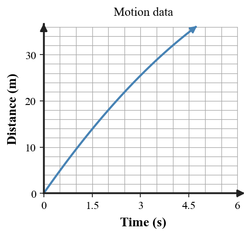
A. The object is stopped for the entire interval because the slope decreases.
B. The object continues forward while slowing down.
C. The object reverses direction because the graph becomes flatter.
D. The object speeds up because its total distance continues to increase.
E. The object has constant speed because the graph never slopes downward.
15. [DOK 3 · Section 2.4] Which explanation is strongest?
A. Heavier objects always have a larger free-fall acceleration.
B. Lighter objects always have a smaller free-fall acceleration.
C. When air resistance is ignored, objects near Earth share approximately the same free-fall acceleration.
D. A vacuum removes gravity, so objects do not accelerate.
E. Objects in free fall move at constant speed.
16. [DOK 4 · Section 2.5] A student uses the graph to defend a motion story. Which story is best supported by the evidence?
A. The object moves forward at constant speed for the entire interval.
B. The object is stopped whenever the line slopes downward.
C. The object speeds up in the positive direction after crossing zero.
D. The object moves in the positive direction, slows to rest, then moves in the negative direction with increasing speed magnitude.
E. The graph shows position, so negative values mean location left of the origin.
Free Response — Questions 17–20
Show formulas, substitutions, graph/model evidence, and reasoning on the back of the answer sheet. Clearly identify final answers.
17.[Section 2.2] A delivery robot travels $36\,\text{m}$ in $24\,\text{s}$ and $54\,\text{m}$ in $36\,\text{s}$. Determine the average speed for the combined trip using total distance and total time.
18.[Section 2.3] A cyclist has acceleration $-3\,\text{m/s}^2$ while slowing from $20\,\text{m/s}$ to $5\,\text{m/s}$. Determine the time interval.
19.[Section 2.4] A dropped object has fallen $20\,\text{m}$ by 2 s and $45\,\text{m}$ by 3 s. Determine the distance covered only during the interval from 2 s to 3 s.
20.[Section 2.5] A classmate claims the graph represents constant-speed motion. Evaluate the claim using slope evidence. Write a corrected motion description and identify one additional representation that could strengthen the model.
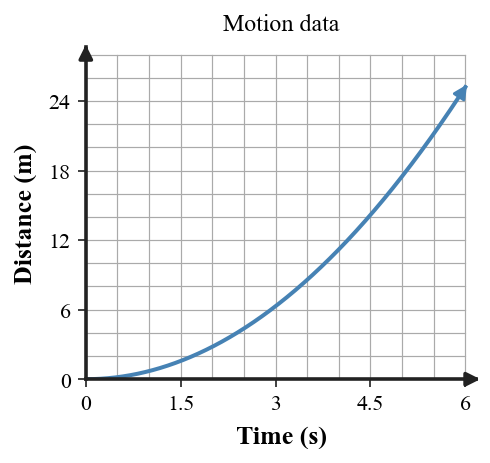
Unit 2 Summative Assessment
Multiple-Choice Answer Key
Version
1
2
3
4
5
6
7
8
9
10
11
12
13
14
15
16
1
E
A
B
C
D
E
A
B
C
D
E
A
B
C
D
E
2
B
C
D
E
A
B
C
D
E
A
B
C
D
E
A
B
3
D
E
A
B
C
D
E
A
B
C
D
E
A
B
C
D
4
A
B
C
D
E
A
B
C
D
E
A
B
C
D
E
A
5
C
D
E
A
B
C
D
E
A
B
C
D
E
A
B
C
6
E
A
B
C
D
E
A
B
C
D
E
A
B
C
D
E
7
B
C
D
E
A
B
C
D
E
A
B
C
D
E
A
B
8
D
E
A
B
C
D
E
A
B
C
D
E
A
B
C
D
Free response: 4 points each. Award full credit for accurate physics, appropriate relationship/model, clear reasoning, and a clearly identified final answer when numerical.
Unit 2 Summative Assessment
Free Response Key — Version 1
v=d/t=240/30=8 m/s. Final: 8 m/s.
Δv=12 m/s; a=12/4=3 m/s².
v=gt=40 m/s downward; speed magnitude 40 m/s.
Initial velocity 2 m/s; velocity rises linearly by 2 m/s each second; constant positive acceleration 2 m/s². Story must match positive-direction speeding up.
Suggested scoring per item: 4 = complete and accurate; 3 = mostly correct with minor omission/error; 2 = partial understanding; 1 = minimal correct physics; 0 = blank/unrelated.
Unit 2 Summative Assessment
Free Response Key — Version 2
v=450/50=9 m/s. Final: 9 m/s.
Δv=-12 m/s; a=-3 m/s².
d=1/2(10)(3²)=45 m.
Moves forward at constant speed, stops during flat interval, then moves forward again; flat means no change in distance. Final segment is steeper than first, so later speed is greater.
Suggested scoring per item: 4 = complete and accurate; 3 = mostly correct with minor omission/error; 2 = partial understanding; 1 = minimal correct physics; 0 = blank/unrelated.
Unit 2 Summative Assessment
Free Response Key — Version 3
v=5 m/s; about 5 meters each second on average.
Δv=20; a=4 m/s².
vf=50 m/s; vavg=25 m/s; d=vavg t=125 m.
Equal lengths mean speed magnitude constant; changing arrow direction means velocity changes, so acceleration occurs during the turn.
Suggested scoring per item: 4 = complete and accurate; 3 = mostly correct with minor omission/error; 2 = partial understanding; 1 = minimal correct physics; 0 = blank/unrelated.
Unit 2 Summative Assessment
Free Response Key — Version 4
v=1200/150=8 m/s.
Δv=12 m/s; a=4 m/s².
45-20=25 m during the third second.
Shown straight line has constant slope, so constant speed, not speeding from rest. Correct distance-time graph should begin with small/zero slope and become progressively steeper (curve upward).
Suggested scoring per item: 4 = complete and accurate; 3 = mostly correct with minor omission/error; 2 = partial understanding; 1 = minimal correct physics; 0 = blank/unrelated.
Unit 2 Summative Assessment
Free Response Key — Version 5
speed=8/30 mi/min; t=11/(8/30)=41.25 min. Final: 41.25 min.
Δv=-15; a=-5 m/s²; negative means acceleration toward west under this sign convention.
d4=80 m; d2=20 m; ratio 4. Final: 4 times.
Horizontal speed graph shows constant speed only; velocity also needs direction. Velocity vectors or directional velocity data would show east-to-north direction change and acceleration during turn.
Suggested scoring per item: 4 = complete and accurate; 3 = mostly correct with minor omission/error; 2 = partial understanding; 1 = minimal correct physics; 0 = blank/unrelated.
Unit 2 Summative Assessment
Free Response Key — Version 6
speed=4 m/s; d=4(25)=100 m. Final: 100 m.
Δv=-24; a=-4 m/s².
t=v/g=5 s.
Starts moving positive direction and slows; at zero momentarily at rest; afterward negative velocity means moving opposite direction, with increasing speed magnitude as values grow more negative.
Suggested scoring per item: 4 = complete and accurate; 3 = mostly correct with minor omission/error; 2 = partial understanding; 1 = minimal correct physics; 0 = blank/unrelated.
Unit 2 Summative Assessment
Free Response Key — Version 7
total d=500 m, total t=200 s, v=2.5 m/s.
Δv=12; t=Δv/a=6 s.
d=1/2(10)(16)=80 m.
Gaps decrease to the right, so object slows while moving right. Acceleration is opposite the velocity (leftward under a 1-D model); evidence is decreasing distance each equal interval.
Suggested scoring per item: 4 = complete and accurate; 3 = mostly correct with minor omission/error; 2 = partial understanding; 1 = minimal correct physics; 0 = blank/unrelated.
Unit 2 Summative Assessment
Free Response Key — Version 8
total=90 m/60 s=1.5 m/s.
Δv=-15; t=(-15)/(-3)=5 s.
45-20=25 m.
Claim false: slope increases with time, so speed increases. Correct story is forward motion that speeds up/accelerates. Velocity-time graph, equal-time motion diagram, or data table could strengthen the model.
Suggested scoring per item: 4 = complete and accurate; 3 = mostly correct with minor omission/error; 2 = partial understanding; 1 = minimal correct physics; 0 = blank/unrelated.
Unit 2 Summative Assessment
Only this answer sheet is graded.
Name:
Version: ① ② ③ ④ ⑤ ⑥ ⑦ ⑧
1
Ⓐ Ⓑ Ⓒ Ⓓ Ⓔ
2
Ⓐ Ⓑ Ⓒ Ⓓ Ⓔ
3
Ⓐ Ⓑ Ⓒ Ⓓ Ⓔ
4
Ⓐ Ⓑ Ⓒ Ⓓ Ⓔ
5
Ⓐ Ⓑ Ⓒ Ⓓ Ⓔ
6
Ⓐ Ⓑ Ⓒ Ⓓ Ⓔ
7
Ⓐ Ⓑ Ⓒ Ⓓ Ⓔ
8
Ⓐ Ⓑ Ⓒ Ⓓ Ⓔ
9
Ⓐ Ⓑ Ⓒ Ⓓ Ⓔ
10
Ⓐ Ⓑ Ⓒ Ⓓ Ⓔ
11
Ⓐ Ⓑ Ⓒ Ⓓ Ⓔ
12
Ⓐ Ⓑ Ⓒ Ⓓ Ⓔ
13
Ⓐ Ⓑ Ⓒ Ⓓ Ⓔ
14
Ⓐ Ⓑ Ⓒ Ⓓ Ⓔ
15
Ⓐ Ⓑ Ⓒ Ⓓ Ⓔ
16
Ⓐ Ⓑ Ⓒ Ⓓ Ⓔ
Show work for full credit. Clearly identify final answer(s).